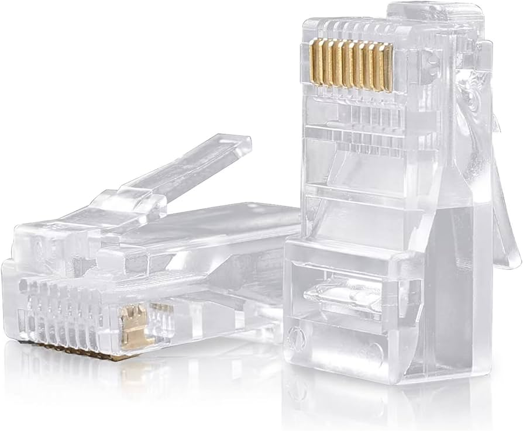

Conectores RJ45
O conector RJ45 (Registered Jack 45) é o tipo de conector mais comum utilizado para conectar cabos de rede Ethernet em computadores, roteadores, switches e outros dispositivos de rede. Ele é fundamental para a construção de redes cabeadas, tanto em ambientes domésticos quanto corporativos.

Para que serve?
Os conectores RJ45 servem como a interface física entre o cabo de rede e o dispositivo. Suas principais funções incluem:
-
Conexão de rede: Permitem a transmissão de dados entre dispositivos em uma rede local (LAN).
-
Padronização: Garantem que a conexão dos oito fios do cabo de rede siga um padrão específico (T568A ou T568B), essencial para a interoperabilidade e o funcionamento correto da rede.
-
Flexibilidade: Facilitam a criação de cabos de rede personalizados para diferentes comprimentos e necessidades.
Características Principais
Os conectores RJ45 possuem algumas características importantes:
-
Oito Pinos: Possuem oito pinos de contato metálicos, cada um projetado para um fio específico do cabo de rede.
-
Trava de Segurança: Uma pequena aba plástica na parte superior do conector que se encaixa na porta do dispositivo, garantindo uma conexão firme e evitando desconexões acidentais.
-
Transparência: Geralmente são transparentes, permitindo visualizar a ordem dos fios antes da crimpagem, o que ajuda a evitar erros.
Tipos de Conectores RJ45
Existem diferentes tipos de conectores RJ45, adaptados para variadas necessidades e categorias de cabos:
-
Conectores Convencionais (Padrão): São os mais comuns, onde os fios são inseridos até o final do conector e crimpados.
-
Conectores de Passagem (EZ Crimp/Vazados): Permitem que os fios atravessem o conector, facilitando a visualização da ordem e o corte preciso do excesso com um alicate de crimpagem específico. Isso reduz erros e melhora a qualidade da crimpagem.
-
Conectores Blindados (STP/FTP): Possuem uma blindagem metálica para proteger os fios internos contra interferências eletromagnéticas, sendo ideais para ambientes com muito ruído elétrico ou para cabos blindados.
-
Conectores para Categorias Específicas: Existem conectores otimizados para cabos Cat5e, Cat6, Cat6a e Cat7, que suportam diferentes velocidades e larguras de banda.
Como Crimpá-los?
A crimpagem de um conector RJ45 requer um alicate de crimpagem RJ45 e a correta organização dos fios. Os passos básicos são:
-
Decapar o cabo: Remova a capa externa do cabo de rede.
-
Organizar os fios: Desfaça os pares e organize os oito fios nas sequências de cores T568A ou T568B.
-
Cortar e alinhar: Corte as pontas dos fios para que fiquem retos e uniformes.
-
Inserir no conector: Insira os fios no conector RJ45, garantindo que cada fio esteja no pino correto.
-
Crimpar: Utilize um alicate de crimpagem RJ45 para fixar os fios no conector.
-
Testar: Use um testador de cabos (Lan Tester) para verificar a continuidade e a correta pinagem.
Onde Comprar?
Conectores RJ45 são amplamente disponíveis em lojas de eletrônicos, informática, materiais elétricos e grandes varejistas online. Você pode encontrá-los em:
- Lojas de informática e redes
- Lojas de materiais elétricos
- Grandes varejistas online (Amazon, Mercado Livre, etc.)
- Lojas especializadas em cabeamento estruturado
Ao comprar, certifique-se de escolher conectores compatíveis com a categoria do seu cabo de rede (ex: Cat5e, Cat6) e o tipo de aplicação (blindado, não blindado, de passagem).